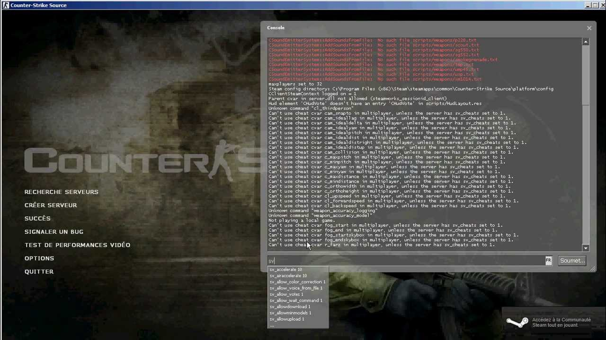

Créer un jeu vidéo
Comment créer un jeu vidéo ?
Créer un jeu vidéo peut-être très compliqué, cela demande certaines capacités et cela peu mobiliser beaucoup de professionnels. Les capacités sont : la patience puisqu’il faut des mois voire des années pour crée un jeu vidéo et de l’imagination puisqu’il faut créer le scénario, les personnages puis il faut les mettre en 3D. Ensuite il faut faire « un playtest » autrement dit en français un « test de jeu » cela consiste à tester le jeu afin de voir son niveau de difficulté et s’il ne possède pas d’erreur de création. Mais ce n’est pas tout car, le jeu est soumis à un deuxième test, appelé système d'évaluation indépendant. Cette évaluation consiste à identifier la catégorie du jeu, c’est-à-dire à voir à quelle tranche d’âge ce jeu est destiné. Comme vous pouvez le voir, toutes ces étapes prennent du temps. Les personnes mobilisées pour créer les jeux vidéo sont des dessinateurs, des scénaristes, des graphistes ou des acteurs pour les voix des personnages.
Si vous souhaitez créer votre propre jeu vidéo, il existe quelques logiciels gratuits, super !!! En voici quelques-uns Construct 2, LÖVE, GameMaker, GDevelop, Godot Engine, SuperPowers, CryEngine, Unreal Engine, Unity. Je vous propose ce site https://www.clubic.com/telecharger/actus-logiciels/article-837262-1-9-logiciels-creer-jeux-videos.html. Les logiciels écrits plus haut y sont détaillés.
